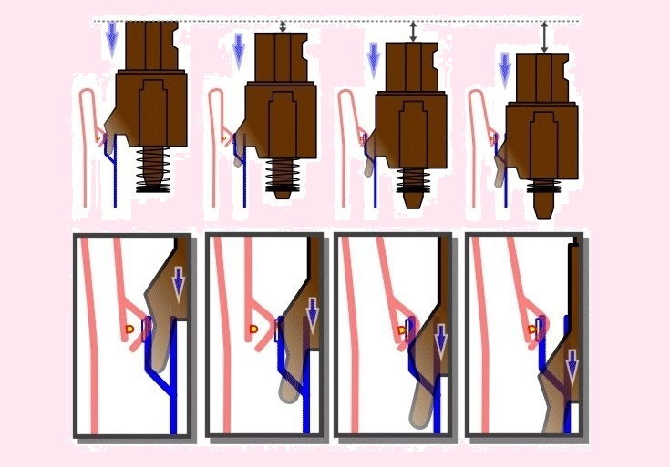

Какие бывают клавиатуры
Разнообразие современных клавиатур поражает — складные, сенсорные, беспроводные, с различными цветами подсветки и с кучей дополнительных клавиш — в выборе можно запутаться. Но все же есть у всех клавиатур (кроме, пожалуй, сенсорных и проекционных) одна общая особенность — это тип переключателей: то есть механизм, при срабатывании которого клавиатура понимает, что вы нажали определенную клавишу и передает соответствующий сигнал системе. Различных типов переключателей множество, и именно они влияют как на удобство при печати, так и на размер клавиш и вообще всей клавиатуры. Рассмотрим основные типы переключателей немного ближе.
Резиномембранные (или просто мембранные) клавиатуры
Пожалуй, самые дешевые клавиатуры, с целой кучей недостатков. Принцип работы прост: под каждой клавишей есть проводящие дорожки, но в разомкнутом виде. Над местом разрыва контакта находится резиновый купол, вверху которого есть кусочек токопроводящей резины. При нажатии на клавишу она продавливает купол, и кусочек резины замыкает контакты:
Для того, чтобы клавиши не болтались, каждая из них помещена в отдельную шахту, так что ход клавиш в итоге составляет 3-4 мм.
Минусов у таких клавиатур хватает — во-первых, для замыкания контакта клавишу нужно нажать полностью, так что печатать на таких клавиатурах тихо не получится. Во-вторых, со временем мембрана может стать или более твердой, или более мягкой, что может привести как к неприятным тактильным ощущениям (одни клавиши могут нажиматься легче/тяжелее других), так и вообще к невозможности печати — даже максимальное нажатие на клавишу не приводит к контакту. В-третьих, реализовать подсветку таких клавиатур достаточно сложно: обычно подсвечивают всю подложку под всеми клавишами, а в сами клавиши встроен «волновод» — прозрачный пластик. Увы — это приводит к тому, что часть букв на клавишах будет освещена неравномерно, но, в принципе, разобрать символы на клавишах ночью можно.
Ножничная клавиатура
С массовым распространением ноутбуков производители клавиатур поняли, что нужно что-то делать: ведь у мембранной клавиатуры ход составляет 3-4 мм, а общая толщина может достигать и полутора сантиметров — для ноутбука это много. Поэтому решено было изменить механизм клавиатуры — вместо шахты стали использовать два пластиковых контура, зацепленных друг на друга, так что итоговая форма стала напоминать ножницы:
Такая конструкция позволила серьезно уменьшить толщину клавиатуры — теперь она могла составлять всего 6 мм при ходе клавиш в 1-2 мм. Проблемы остались по сути все те же, что и у мембранной клавиатуры — со временем мембрана теряет эластичность, что приводит к невозможности нормально набирать текст. Зато теперь решилась другая проблема — с подсветкой: так как клавиши стали ближе к подложке со светодиодами, то теперь символы на них подсвечиваются в основном равномерно.
Клавиатура-бабочка
Время не стоит на месте, и уже для ноутбуков клавиатура толщиной в 5-6 мм становится роскошью. И для своего нового тонкого MacBook Apple разработала новый тип переключателей — бабочку: теперь переключатель состоит из двух пластиковых рамок, которые при работе двигаются, как крылья бабочки:
Это позволило уменьшить толщину клавиатуры на 40%, но зато принесло массу проблем: во-первых, клавиатура стала неразборной: то есть залили ее пивом — меняйте ее всю, снять клавиши и почистить ее не удастся. Во-вторых, ход клавиш стал меньше миллиметра, а ощущения при печати стали приближаться к ощущениям от сенсорной клавиатуры — не всем это нравится. В-третьих, из-за короткого хода клавиатура со временем начинает залипать из-за попавшей под клавиши грязи: увы, прочистить ее бывает нелегко. Из плюсов — опять же из-за короткого хода ушла проблема утечки света между клавишами, так что теперь подсвечиваются только символы на самих клавишах и ничего больше.
Резиновая клавиатура
Любите работать в дороге, но места для полноценной клавиатуры в рюкзаке нет? Не проблема — можно купить... гибкую клавиатуру, которую легко можно свернуть в рулон:
Принцип действия тут прост и чем-то схож с мембранной клавиатурой, но без мембраны — токопроводящая резинка находится внизу самой клавиши, и при нажатии она замыкает контакт на плате:
Чаще всего такие клавиатуры встречаются в домофонах, калькуляторах, джойстиках и т.д. Печатать на них не очень удобно, подсветку тоже реализовать непросто (обычно просто подсвечивается вся плата, а кнопка делается полупрозрачной — в итоге в темноте клавиша светится, а вот краска на ней кажется черной — не самый лучший вариант, но проблем с распознаванием символов точно нет). Единственный ее плюс — ее легко сделать гибкой и полностью водозащищенной (резина же). Но кроме 2.5 гиков вряд ли кто ее использует, так что в продаже найти такую клавиатуру трудновато (Яндекс.Маркет говорит о всего одной модели).
Механическая клавиатура

Царь-клавиатура, где для каждой клавиши есть собственный механический переключатель и отдельный светодиод подсветки. В итоге цена таких клавиатур крайне дорогая (обычно выше 100 долларов), но и ощущения от печати наилучшие: нажатие распознается где-то с середины хода, всегда есть четкий «стук», а ресурс «механики» на порядок выше, чем у «мембранки» — несколько десятков миллионов нажатий. Принцип работы прост — клавиша имеет поршень, на который надета пружинка, и небольшой язычок сбоку. При нажатии пружинка сжимается, и язычок замыкает контакт где-то на половине хода:
Увы — не обошлось и без минусов. Первый заключается в том, что светодиод подсветки расположен вверху клавиши, так что английские символы он подсвечивает хорошо, а вот расположенные ниже русские — нет. Вторая проблема — полное отсутствие какой-либо защиты от влаги — если мембрану нетрудно сделать водонепроницаемой, то с механикой это не так. Ну и последняя проблема — толщина: так как там внутри полноценный механизм, то, увы, толщина клавиатуры зачастую оказывается порядка 2 см — так что в ноутбуки ее поставить невозможно (исключение — 5 см супер-геймерские монстры, но это скорее переносные системные блоки, чем ноутбуки).
Сенсорная клавиатура
Нет, не та, которая всплывает на экране вашего смартфона, хотя принцип схож: клавиатурой выступает обычный сенсорный экран, на котором отображаются клавиши. За исключением китайских поделок, такую клавиатуру пока что можно встретить только в ноутбуке Lenovo Yoga, но, думаю, это идею подхватят и другие производители:
Плюсы очевидны — можно вывести любую клавиатуру, которая только душе угодно, с любым цветом и размером клавиш, различными раскладками и символами. Но, увы, плюсы на этом заканчиваются: нет никакой тактильной отдачи (вибро плохо для этого подходит), и невозможно печатать вслепую. Но сам концепт, конечно, интересен.
Проекционная клавиатура
Выглядит, скорее, как футуристический концепт, но такую клавиатуру уже можно купить. Принцип действия прост: с помощью лазеров на ровную поверхность проецируется сетка клавиш, и вся клавиатура освещена инфракрасным светом. Как только вы подносите палец к «клавише», то отраженный свет фиксируется специальным сенсором, который и высчитывает координаты нажатия, после чего сопоставляет их с координатами каждой из клавиш:
Разумеется, проблем у таких клавиатур полно: во-первых, море случайных нажатий. Во-вторых, не подходит любителям печатать сразу несколькими пальцами — если последовательно идущие клавиши расположены друг за другом, то велик шанс просто перекрыть пальцем на верхней клавише нижнюю (ведь свет через палец не проходит). В-третьих, все по понятным причинам должно происходить на ровной поверхности, и на ней же должен стоять сам излучатель. Короче говоря — такая клавиатура скорее игрушка, чем рабочий инструмент.
Вот в общем-то и все типы клавиатур, которые вы можете найти в продаже, хотя, скорее всего, вам будут попадаться только мембранные, механические и ножничные.